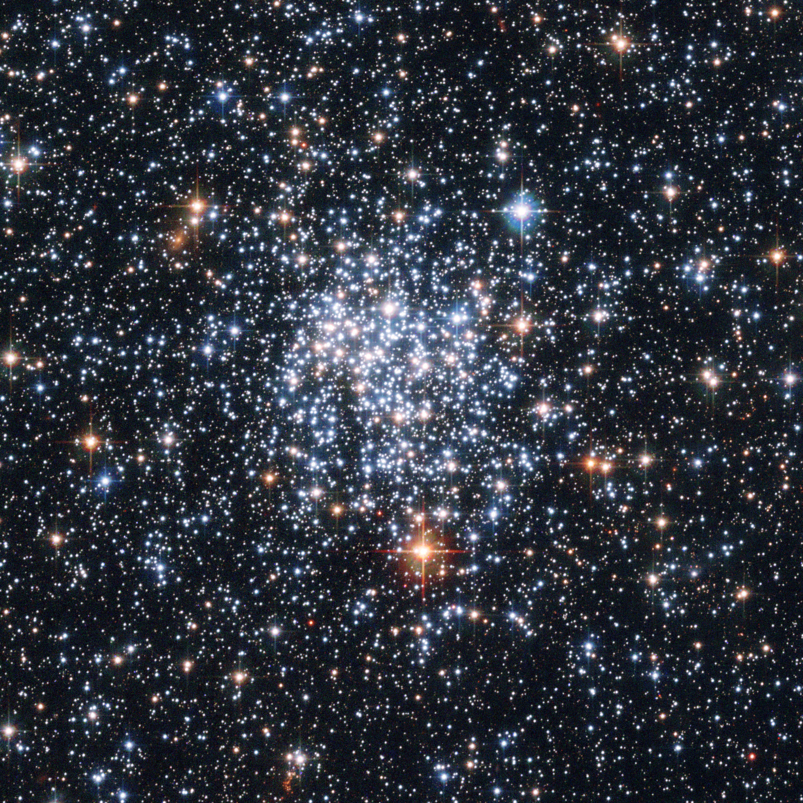

Forrige side🙂 🙁hovedserietilpasning

Hva nå med vår åpne hop NGC265 som ligger i den Store Magellanske Sky? Den ligger for langt unna til at vi kan måle avstanden med parallakse! Vi kan altså kun måle tilsyndelatende størrelseklasse m og ikke absolutt størrelseklasse M for stjernene i denne hopen. Overflatetemperaturen kan vi enda måle, da vi kun trenger spektret fra stjernen for å måle den. Neste side